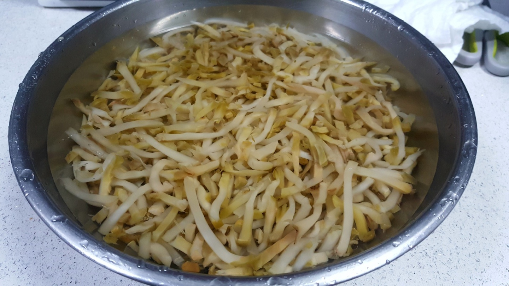
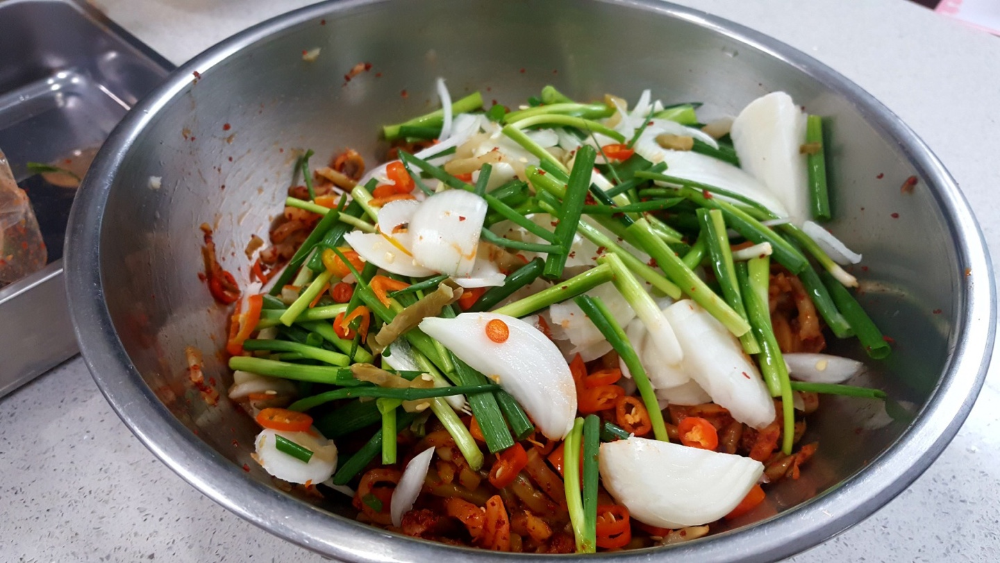

Chinese Food


재료 리스트
짜사이 1kg | 양파 2개 | 홍고추 2개
양념소스( 설탕 2스푼 | 식초 2스푼 | 다진마늘 2스푼 | 고춧가루 2스푼 | 통깨 2스푼 | 참기름 2스푼 )
레시피
1. 짜사이 1kg을 찬물에 30분 이상 담궈 염분을 빼주세요.
(여러번 헹궈가며 간을 확인하세요.)
2. 염분을 뺀 짜사이는 물기를 꼭 짜서 제거해주고 양파와 홍고추를 채썰어주세요.
3. 물기를 짠 짜사이는 설탕과 식초에 10분정도 재워주 뒤 고추가루를 넣고 골고루 섞어주세요.

4. 마지막으로 썰어놓은 야채와 참기름을 넣고 잘 버무려주세요.

짜사이 무침 완성 !!